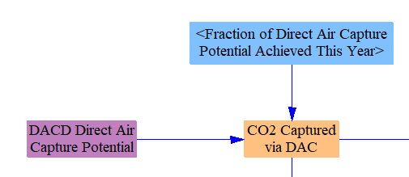
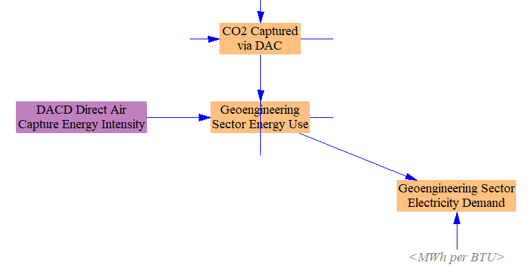
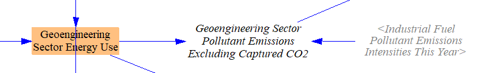
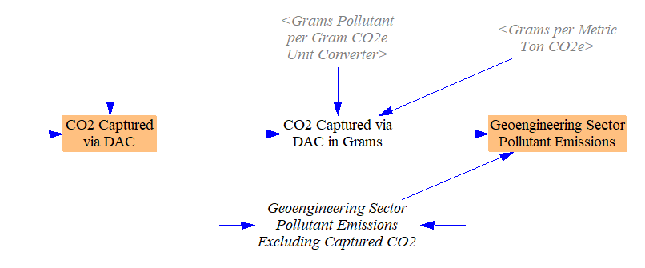
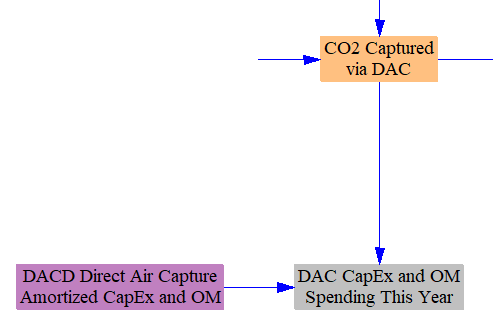
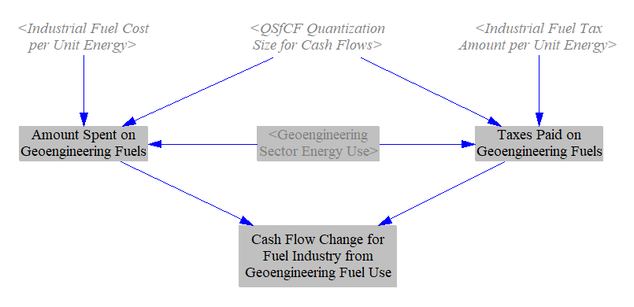
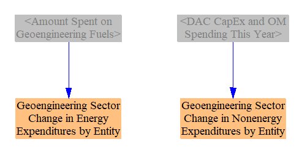
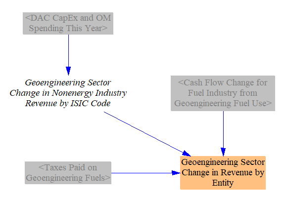

Defining Geoengineering and Direct Air Capture
According to the IPCC, the term “geoengineering” encompasses two core strategies: carbon dioxide removal and solar radiation management (AR5 Summary for Policymakers, p. 29).
Carbon dioxide removal involves capturing CO2 molecules from the atmosphere, as opposed to capturing them from a smokestack or other concentrated exhaust stream. In the Energy Policy Simulator (EPS), this technique is called Direct Air Capture (DAC). DAC refers specifically to using artificial means, such as machines or chemical processes, to remove CO2 from the air. DAC does not include afforestation or reforestation, which the EPS handles in the Land Use, Land Use Change, and Forestry sector. Similarly, DAC does not include growing biomass, burning it, and capturing the resulting emissions from the exhaust stream, since the step of capturing CO2 from the atmosphere is done by trees, not by technology, and the capture from the exhaust stream is handled by the Carbon Capture and Sequestration module within the EPS).
Solar radiation management include techniques to reduce incoming light and heat without reducing carbon dioxide concentrations, such as injecting reflective particles into the stratosphere or placing objects to block or deflect light in space.
At present, DAC is the only geoengineering strategy implemented in the EPS. This is for several reasons:
-
The EPS models emissions of greenhouse gases (GHGs), not planetary temperatures or radiative forcing. DAC can be represented as negative emissions, which can be graphed with and compared against emissions sources. There is no satisfactory way to represent solar radiation management without introducing calculations of global concentrations and warming to the EPS, which might be a poor fit with the EPS’s usual national or sub-national scope.
-
Solar radiation management is unlikely to be technolically ready or commercially mature on the timeframe modeled by the EPS. It might be possible for DAC to be ready to begin deployment at scale before the end of the EPS model run.
-
DAC is less likely than solar radiation management to have unexpected, negative environmental consequences, since it is simply removing excess CO2 that humans added to the atmosphere, instead of introducing a new dynamic that aims to counter the warming effects of the CO2.
Technology Modeled
A number of technological pathways have been proposed for DAC. The EPS inpu data assumes the use of hydroxide sorbent-based technology, because this is the most mature technology. It is primarily suitable for large-scale plants and has a high input temperature requirement (>800 C). Other proposed technologies, such as those based on amines, could potentially be made more modular and require much lower temperatures (able to be supplied by waste heat), but they are unlikely to be deployed meaningfully prior to the end of the EPS model run timeframe.
All data associated with DAC can be edited in geoeng/DACD to allow the user to represent different technology options.
Model Structure
No geoengineering occurs in the BAU case, so there is no BAU structure for the Geoengineering sector.
The technical potential for DAC, in mass of carbon captured from the atmosphere per year, is taken in as time-series input data. A policy lever specifies what share of the technical potential is realized.

The energy used in the DAC process is calculated by multiplying input data on energy intensity per unit CO2 captured by the quantity of CO2 captured in each year. Electricity demand is separated out and is summed with other sectors’ electricity demand on the Cross-Sector Totals sheet.

The pollutant emissions associated with the energy used for geoengineering are calculated using industrial emissions intensities.

The CO2 removed from the atmosphere is subtracted from the emissions caused by energy use in the geoengineering sector to find the final, net emissions from the sector. These emissions will be negative for CO2 but positive for other pollutants (unless only emissions-free fuels are used).

Capital, operations, and maintenance costs (not including energy costs) are calculated using a single, lumped figure in currency units per mass of captured CO2. This figure amortizes the capital cost of DAC equipment over the life of that equipment, providing for an even flow of expenses and allowing for a simpler structure that does not need to track specific quantities or vintages of equipment.

Fuel costs are calculated by multiplying fuel use by the cost per unit energy. Taxes on those fuels are calculated by multiplying the amount of tax per unit fuel by the quantity of fuel used. The difference in amount spent on fuels and taxes paid represents the cash flows to the fuel suppliers.

We assume all DAC is funded by government, since DAC on the required scale would produce far more CO2 than there is any commercial market for, and we are assuming this CO2 is securely stored for the long-term, preventing its use in most products. Accordingly, we assign all expenditures to the “government” cash flow entity.

All revenues from the capital and operational expenditures are assigned to the non-energy industries, and all are assigned to ISIC 28 (Machinery and equipment not otherwise classified). Portions of this payment going to labor and taxes are separated out on the Cross-Sector Totals sheet. Energy expenditures are assigned to the appropriate energy-supplying industries, and tax revenues are assigned to the government.
